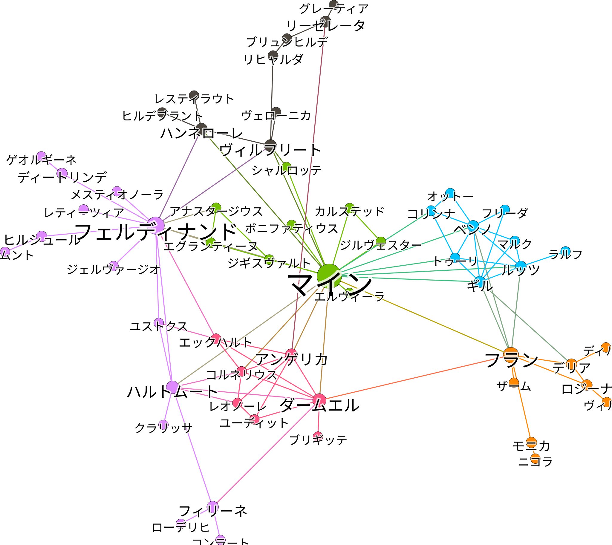
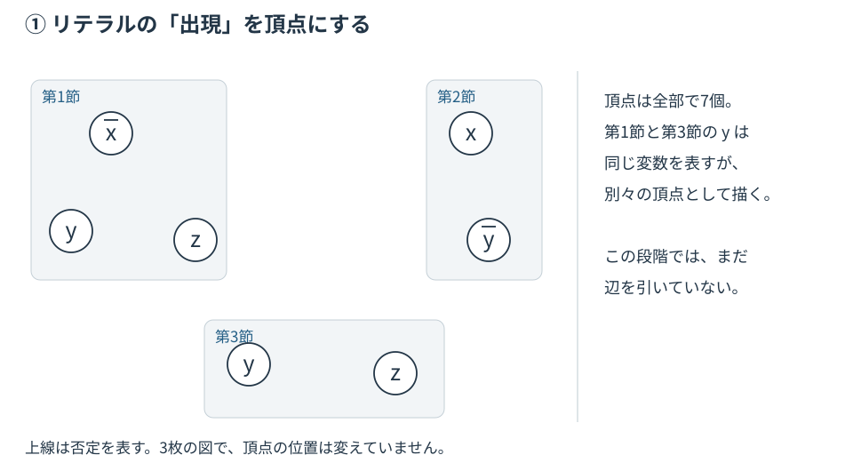
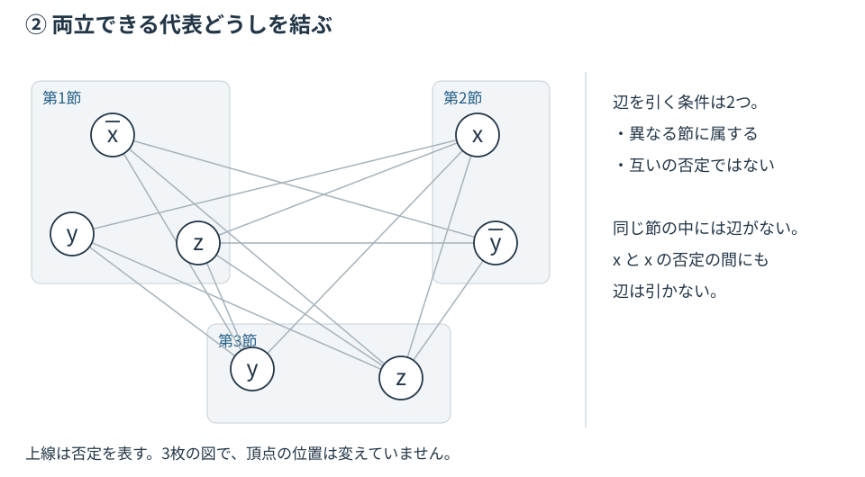
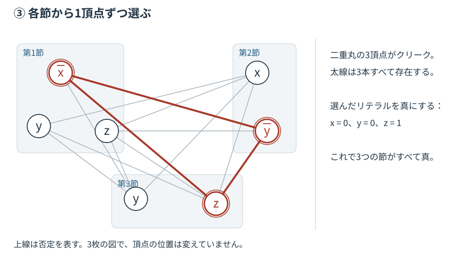
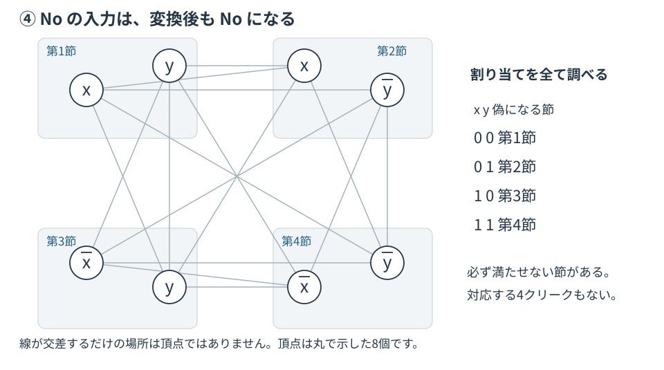
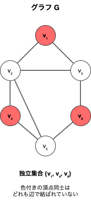
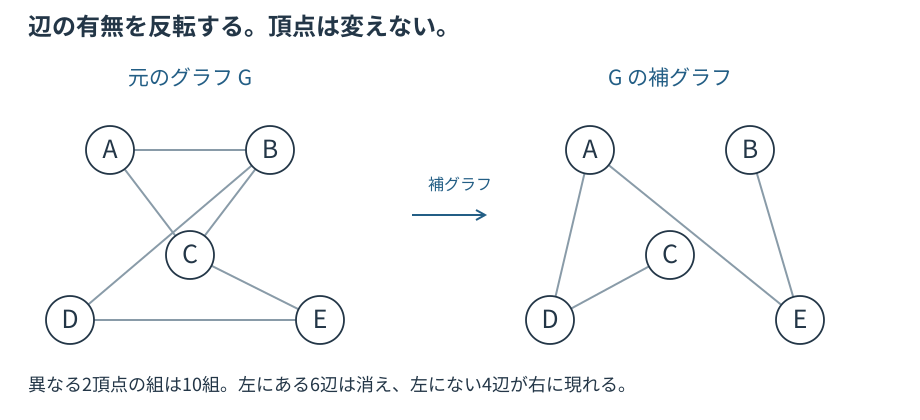
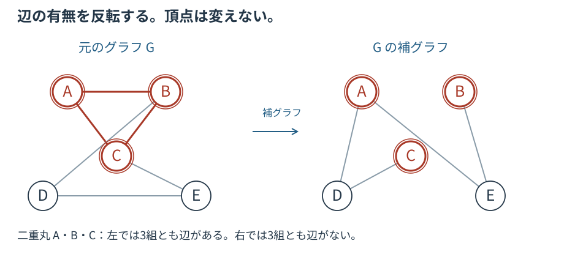
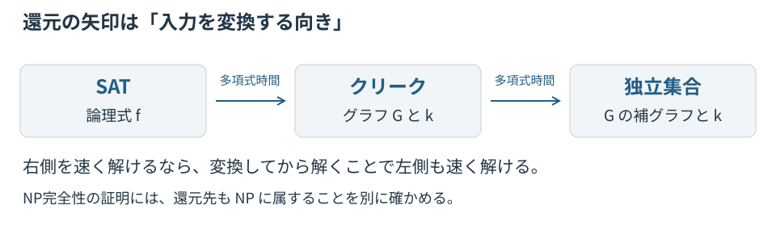

1. 人間関係から「最強の仲良しグループ」を探す: クリーク問題
まずは、還元の「翻訳先」となるクリーク問題について理解します。
1.1. 密度の高い構造の抽出
下の図は、あるライトノベルの登場人物たちの関係を抜き出したものです。1つの文の中に2人以上の人物が登場したときに、その人たちの間に線を引いただけの単純なルールで作られています。

この図の線は「同じ文に登場した」という観測を表すだけで、知り合い・友人・好意などを直接証明するものではありません。以下の仲良しグループのたとえでは、辺を「互いに知り合い」と読む別のモデルを考えます。
主人公「マイン」を中心に、いくつかのグループ（コミュニティー）ができているのが見て取れます。家族や友人、職場など、現実の人間関係にも似た塊があります。
|
この関係図は、小説投稿サイト「小説家になろう」発の作品『本好きの下剋上』(香月美夜)の登場人物から作りました。文章から人物の共起関係を機械的に拾って線で結ぶだけで、こうしたグラフ(共起ネットワーク)が得られます。 |
さて、このような関係図の中で、特に注目したいのが「そのグループに属する全員が、互いに直接知り合いである」ような、非常に結びつきの強いグループです。このような特別なグループ、すなわち完全部分グラフ（どの2頂点も互いに辺で結ばれた部分グラフ）をなす頂点集合のことを、グラフ理論の言葉で「クリーク」と呼びます。
上の図は、それぞれ2人、3人、4人、5人のメンバー全員が互いに知り合い（辺で結ばれている）の「クリーク」です。クリークは、いわば「強固な仲良しグループ」と言えます。人間関係の分析だけでなく、SNSのコミュニティ発見や、タンパク質の相互作用ネットワークの解析など、様々な分野でこの「密な構造」を見つけることが重要になります。
1.2. クリーク問題とは？
この「クリーク」を探す問題を、コンピューターに解かせるための形式的な問いとして定義したものが「クリーク問題」です。
これは「Yes/No」で答えるシンプルな決定問題です。 以下のグラフ \(G\) を例に、問題を具体的に見てみましょう。
-
グラフ \(G\) に頂点数 \(k=2\) 個の完全部分グラフ（クリーク）は含まれるか？ → Yes
-
頂点 \(\{v_1,v_2\}\) や \(\{v_4,v_5\}\) など、辺で結ばれた2頂点の組はすべてサイズ2のクリークだからです。
-
グラフ \(G\) に頂点数 \(k=3\) 個の完全部分グラフ（クリーク）は含まれるか？ → Yes
-
頂点 \(\{v_4,v_5,v_6\}\) の組や \(\{v_1,v_2,v_3\}\) の組などが、互いに辺で結ばれているためです。
-
グラフ \(G\) に頂点数 \(k=4\) 個の完全部分グラフ（クリーク）は含まれるか？ → Yes
-
頂点 \(\{v_1,v_2,v_3,v_4\}\) の組が、唯一のサイズ4のクリークとして存在します。
-
グラフ \(G\) に頂点数 \(k=5\) 個の完全部分グラフ（クリーク）は含まれるか？ → No
-
サイズ5のクリークが存在するなら、各頂点から4本以上の辺が出ている必要がありますが、そのような頂点は5つ存在しないためです。
一方で、「このグラフで、最大何人の『全員知り合い』グループが作れますか？」という問題は最大クリーク問題と呼ばれます。決定問題であるクリーク問題を繰り返し使えば、最大クリーク問題も解けます。具体的には、\(k=1,2,\ldots,n\) と大きくしながら「サイズ \(k\) のクリークはあるか？」を問い、はじめてNoが返る直前の \(k\) が最大サイズです。すべてYesなら最大サイズは \(n\) です（頂点数 \(n\) に対し高々 \(n\) 回の問い合わせで済み、二分探索ならさらに少なくできます）。決定問題が解ければ最大化問題も多項式回の呼び出しで解ける、という関係です。
| この章のグラフは、自己ループや多重辺のない無向グラフを考えます。頂点ペアとは異なる2頂点の組です。 |
2. 論理パズルをグラフ問題に翻訳する：SATからクリークへ
それでは、いよいよ本題の「多項式時間還元」を実践してみましょう。ここでは、NP完全問題の代表格である「SAT問題」を、今学んだ「クリーク問題」に翻訳（還元）していきます。この翻訳が成功すれば、「クリーク問題は、少なくともSAT問題と同じくらい難しい」ということが証明できます。
|
還元で作るものは「答え」ではなく「別の問題の入力」
論理式から、グラフ \(G\) と探すサイズ \(k\) を作ります。この変換の途中で、SATの解を探す必要はありません。 必要なのは、どの入力でも 元がYesなら変換後もYes、元がNoなら変換後もNo となり、変換自体が多項式時間で終わることです。 もしクリーク問題を多項式時間で解く方法があれば、変換後にそれを使ってSATも多項式時間で解けます。この向きが、NP困難性の証明の要点です。 |
2.1. SAT問題の復習
SAT問題とは、与えられた論理式を真（1）にするような変数の割り当てが存在するかどうかを判定する問題でした。
例えば、\((x + \bar y) \cdot (\bar x + y)\) のような論理式が与えられます。この式全体を真（1）にするには、AND（\(\cdot\)）で結ばれた \((x + \bar y)\) と \((\bar x + y)\) の両方を真にする必要があります。
ここで用語を確認します。
-
リテラル: 変数そのもの（例: \(x\)）や、その否定（例: \(\bar y\)）のことです。
-
節 (Clause): リテラルをOR（\(+\)）でつないだもの（例: \((x + \bar y)\)）です。
-
相補的リテラル: \(x\) と \(\bar x\) のように、互いに否定の関係にあるリテラルのペアのことです。
SAT問題は「すべての節を同時に満たす(真にする)ことは可能か？」という問題です。
2.2. 翻訳のルール: 論理式からグラフを作る
さて、話をSATからクリークへの還元に戻しましょう。以下の論理式 f に関するSAT問題を例に、翻訳のプロセスを体験します。
\(f(x,y,z)=(\bar x+y+z)\cdot(x+\bar y)\cdot(y+z)\)
この式には3つの節があります。このSAT問題の目標は、3つの節すべてを 1 にする x, y, z の組み合わせを見つけることです。
Step 1: 節ごとにリテラルを頂点として配置する まず、節ごとにグループを作り、リテラルの出現ごとに1頂点を描きます。同じ \(y\) でも、第1節の \(y\) と第3節の \(y\) は別の頂点です。変数は同じでも、「どの節の代表を選ぶか」を区別するためです。

Step 2: 矛盾しない頂点同士を辺で結ぶ 次に、頂点と頂点を辺で結びます。ただし、辺を結ばない例外的なルールが2つあります。
-
ルール(A) 同じグループ内の頂点同士は結ばない。
-
ルール(B) 互いに相補的なリテラル同士は結ばない (例: \(x\) と \(\bar x\) は結ばない)。
この2つの例外を除き、他のすべての頂点ペアを辺で結びます。すると、次のようなグラフが完成します。

この変換は多項式時間で実行できます。リテラルの総数を \(L\) とすると、 変数を整数の識別番号で表し、その比較を1回と数えるモデルでは、 辺を引くかどうかの判定は各頂点ペアについて定数時間で行え、 ペアの総数は高々 \(\frac{L(L-1)}{2}\) なので、全体の計算量は \(\text O(L^2)\) です。
2.3. 翻訳の検証：クリークを見つけるとSATが解ける！
グラフが完成しました。元のSAT問題には節が 3つ あったので、このグラフでサイズ3のクリークを探します。もし見つかれば、元のSAT問題の答えは「Yes」です。
実際に探すと、3つの節からそれぞれ1つずつ選んだ頂点、第1節の \(\bar x\)、第2節の \(\bar y\)、第3節の \(z\) により、下の図で太線と二重丸で示された \(\{\bar x, \bar y, z\}\) という頂点サイズ3のクリークが見つかります。3頂点はどれも異なる節に属し、互いに辺で結ばれています。

このクリークが、なぜSAT問題の解になるのか見てみましょう。
-
クリークの頂点は、すべて異なるグループに属します。ルール(A)のため、クリークを構成する頂点は各節から1つずつ選ばれた代表選手となります。
-
クリークの頂点は、互いに矛盾しません。ルール(B)のため、クリーク内には \(x\) と \(\bar x\) のようなペアは存在しません。
-
クリークの頂点を真にします: このクリークの頂点 \(\{\bar x, \bar y, z\}\) に対応するリテラルをすべて真にしてみましょう。\(\bar x=1\), \(\bar y=1\), \(z=1\)、すなわち \(x=0, y=0, z=1\) と値を割り当てます。上の 2. で矛盾がないことを確かめたので、この割り当ては必ず一貫して決められます。
-
SATが解けている！: この割り当て (
x=0, y=0, z=1) を元の論理式fに代入すると、\((\bar x+y+z)=1\)、\((x+\bar y)=1\)、\((y+z)=1\) となり、3つの節がすべて真、式全体が1になります。
逆向きも成り立ちます。もし \(f\) を真にする割り当てがあれば、各節には必ず真になっているリテラルが少なくとも1つあります。節ごとにその1つを選ぶと、選んだリテラルはどれも同じ割り当ての下で真なので、\(x\) と \(\bar x\) が同時に選ばれることはありません（ルール(B)を満たす）。しかも各節から1つずつ選んでいるので同一グループの重複もありません（ルール(A)を満たす）。したがって選んだ \(k\) 頂点は互いに辺で結ばれ、サイズ \(k\) のクリークになります。
ここで \(k\) は節の数です。元の式に充足割り当てが存在することと、変換で作ったグラフにサイズ \(k\) のクリークが存在することが同値です。したがって、YesだけでなくNoも保存されます。
| ここで示したのは、答えが一致するという「同値性」です。任意のクリーク問題の入力をSATへ戻す変換を示したわけではありません。また、割り当てとクリークは1対1とは限りません。複数のリテラルが真の節では、代表の選び方が複数あります。 |
解がない場合の例
では、解が存在しないSAT問題はどうなるでしょうか？ 次の式 g を考えてみます。
\(g(x,y)=(x+y)\cdot(x+\bar y)\cdot(\bar x+y)\cdot(\bar x+\bar y)\)
この式には節が4つあるので、対応するグラフでサイズ4のクリークを探します。しかし、このグラフにはサイズ4のクリークは存在しません。各節から1頂点ずつ、計4頂点を選ぼうとすると、どう選んでも \(x\) と \(\bar x\)、または \(y\) と \(\bar y\) の相補対がどこかに紛れ込み、その2頂点の間には辺がないためです。
これは、元の論理式 g を 1 にする x, y の組み合わせが存在しないことに対応しています。実際、\((x+y)(x+\bar y)=x\)、\((\bar x+y)(\bar x+\bar y)=\bar x\) と整理でき、\(g=x\cdot\bar x=0\) なので、どんな割り当てでも g は真になりません。

SAT問題とクリーク問題の間には、以下の対応関係にあります。
| SAT問題 | クリーク問題 |
|---|---|
節の数 \(k\) |
探すクリークのサイズ \(k\) |
各節から1つのリテラルを選ぶ |
各グループから1つの頂点を選ぶ |
選んだリテラルに相補対(\(x\), \(\bar x\)のような対)が存在しない |
選んだ頂点間にすべて辺がある |
すべての節の値を1にする変数の割り当て |
サイズ \(k\) のクリーク |
|
発展：空の節などの端の場合
本文では節が1つ以上ある式を考えました。空の節を含む式は充足不能で、変換後もその節から頂点を選べないため、節数と同じサイズのクリークはできません。 節が0個の式を真とする規約では、これだけは固定のYes入力（1頂点のグラフと \(k=1\)）へ変換すれば、すべての場合を扱えます。 |
2.4. 結論：クリーク問題もNP完全である
これまでの議論から、どんなSAT問題でも高速にクリーク問題に還元できることがわかりました。 つまり、クリーク問題は少なくともSAT問題と同じか、それ以上に難しい（NP困難である）と言えます。 さらに、クリーク問題自身もNPに属します。なぜなら、「この \(k\) 個の頂点がクリークである」 という解の候補が与えられたとき、すべての頂点ペア間に辺があるかを確認するだけで済み、 これは \(\text O(k^2)\) 時間で検証できるからです。 よって、クリーク問題もまたNP完全であることが証明されました。
|
コラム: 理論上は「絶望的に難しい」はずなのに…？
SAT問題はNP完全、すなわちP≠NPが正しければ多項式時間では解けないと考えられている問題です。ところが、現代の「SATソルバー」と呼ばれるプログラムは、実社会から出てくる多くの問題を驚くほど速く解いてしまいます。 その中心にあるのがCDCL(Conflict-Driven Clause Learning、矛盾駆動節学習)というアルゴリズムです。探索の途中で矛盾にぶつかるたびに「なぜ矛盾したか」を新しい節として学習し、同じ袋小路を二度と通らないようにして枝刈りします。この工夫により、最新のソルバー(MiniSat、CaDiCaL、Kissat など)は、変数が100万個・節が1000万個を超える産業規模の問題でも実用的な時間で解けます。 用途も広く、たとえば設計したCPUの論理回路が仕様と一致するかを確かめる等価性検証(EDAの重要工程)、ソフトウェアの欠陥探索、行動計画の自動立案などに使われています。SATソルバーの性能は毎年開催される「SAT Competition」で競われ、年々改善が続いています。 これは、現実世界から生まれる問題の多くが、理論上の「最悪のケース」とは違う、解きやすい構造を持っているためです。「理論上の難しさ」と「実用上の速さ」の間にこうしたギャップがあることも、この分野の研究が活発な理由の一つです。 |
|
コラム: 100万ドルの賞金は誰の手に
前章で触れたとおり、「P問題とNP問題は等しいか？（P=NP?）」は、アメリカのクレイ数学研究所が2000年に発表した「ミレニアム懸賞問題」の一つで、解決には100万ドルの賞金がかけられています。 7問のうち、これまでに解かれたのはポアンカレ予想ただ1つです。証明したロシアの数学者グリゴリー・ペレルマンは、2006年のフィールズ賞に続き、2010年に贈られるはずだった100万ドルの賞金も辞退しました。先行研究者リチャード・ハミルトンへの評価が不公平だという不満などが理由と伝えられています。P≠NP予想は、残る6問の一つとして今も解かれていません。 |
3. クリーク問題の「裏返し」：独立集合問題
クリーク問題がNP完全であることを示しました。ここでは、クリーク問題と表裏一体の関係にある「独立集合問題」を紹介し、NP完全問題がどのように連鎖的に証明されていくかを体験します。
3.1. 独立集合とは？
クリークは「全員が互いに知り合いのグループ」でした。では、その正反対の概念を考えてみましょう。
グラフの中で、どの2頂点も辺で結ばれていないような頂点の集合を「独立集合」と呼びます。人間関係に例えるなら、「グループ内の誰も互いに面識がない」という状態です。

上の図では、色のついた頂点の集合が独立集合です。どの2頂点を取っても、その間に辺がないことを確認してください。
3.2. 独立集合問題とは？
これもクリーク問題と同様に、Yes/Noで答える決定問題です。
3.3. どこで役に立つのか？
独立集合問題は、意外にも多くの実問題に隠れています。
スケジューリング問題
大学の時間割を考えてみましょう。各授業を頂点とし、「同じ学生が履修する可能性がある授業ペア」を辺で結びます。すると、「同じ時間帯に開講できる授業の集合」は、このグラフにおける独立集合に対応します。なぜなら、独立集合内のどの2授業も同じ学生が履修しないため、同時開講しても衝突しないからです。
資源配置問題
電波塔の配置を考えます。各候補地を頂点とし、「電波が干渉する距離にある候補地ペア」を辺で結びます。干渉なく設置できる電波塔の最大数は、最大独立集合のサイズに対応します。
このように、「互いに競合しないものを最大限選ぶ」タイプの問題は、独立集合問題として定式化できることが多いのです。
3.4. 補グラフ：辺の有無を反転する
独立集合問題がNP完全であることを証明するために、「補グラフ」という概念を導入します。
あるグラフ \(G\) の補グラフ \(\bar G\) とは、元のグラフの辺の有無を完全に反転させたグラフです。
-
\(G\) で辺があった頂点ペア → \(\bar G\) では辺がない
-
\(G\) で辺がなかった頂点ペア → \(\bar G\) では辺がある

上の図は、グラフ \(G\) とその補グラフ \(\bar G\) の例です。元のグラフで結ばれていたペアが補グラフでは離れ、元のグラフで離れていたペアが補グラフでは結ばれています。
3.5. クリークと独立集合の双対性
補グラフの定義から、次の重要な性質が導かれます。
|
グラフ \(G\) におけるクリークは、補グラフ \(\bar G\) における独立集合に対応する。 逆に、グラフ \(G\) における独立集合は、補グラフ \(\bar G\) におけるクリークに対応する。 |
なぜでしょうか？
-
クリークの定義：すべての頂点ペアが辺で結ばれている
-
独立集合の定義：すべての頂点ペアが辺で結ばれていない
補グラフでは辺の有無が反転するので、「すべて結ばれている」状態が「すべて結ばれていない」状態に変わります。つまり、クリークが独立集合に、独立集合がクリークに変身するのです。

3.6. クリーク問題から独立集合問題への還元
この双対性を利用すると、クリーク問題から独立集合問題への還元はとても簡単です。
この還元が正しいことを確認しましょう。
-
\(G\) にサイズ \(k\) のクリークが存在する
⇔ そのクリークを構成する \(k\) 頂点は、\(G\) ですべて辺で結ばれている
⇔ その \(k\) 頂点は、\(\bar G\) ではどの2頂点も辺で結ばれていない
⇔ \(\bar G\) にサイズ \(k\) の独立集合が存在する
したがって、クリーク問題と還元後の独立集合問題は、常に同じ答え（YesかNo）を返します。
3.7. 還元の計算量
この還元は多項式時間で実行できるでしょうか？
補グラフの計算では、すべての頂点ペアについて辺の有無を反転させます。頂点数を \(n\) とすると、頂点ペアの総数は \(\frac{n(n-1)}{2}\) です。各ペアについて辺の有無を反転する操作は定数時間で行えるため、補グラフ全体の計算は \(\text O(n^2)\) 時間で完了します。
これは入力サイズの多項式なので、この還元は確かに多項式時間還元です。
3.8. 結論: 独立集合問題もNP完全である
以上から、次のことが示されました。
-
クリーク問題は独立集合問題に多項式時間還元できる
-
したがって、独立集合問題は少なくともクリーク問題と同じかそれ以上に難しい（NP困難）
-
-
独立集合問題はNPに属する
-
「この \(k\) 個の頂点が独立集合である」という解の候補が与えられたとき、すべての頂点ペア間に辺がないことを確認すれば検証できる
-
これは \(\text O(k^2)\) 時間で可能
-
1と2を合わせて、独立集合問題はNP完全であることが証明されました。
|
コラム: 「Yes」は簡単に示せるのに「No」は?
クリーク問題でも独立集合問題でも、これまでNPに属することを「解の候補のk頂点を1組見せれば \(\text O(k^2)\) で確認できる」と説明してきました。しかしよく見ると、これは「サイズ \(k\) のものがある(Yes)」側の証拠にすぎません。その裏の「サイズ \(k\) のものは1つもない(No)」を、同じように短く示せるでしょうか。Noとなるすべての入力に対して使える、多項式長の証拠と多項式時間の検証方法は知られていません。特定の入力には、頂点数が \(k\) 未満など、簡単な証拠がある場合もあります。 このYes/Noの非対称性が、決定問題を考えるうえでの1つの分かれ道です。前章で述べたとおり、No側に短い証拠がある問題のクラスはco-NPとよばれ、NP=co-NPか?はP=NP?と並ぶ未解決問題でした。クリーク問題や独立集合問題はNP完全なので、すべてのNo入力に対する多項式長の証拠と多項式時間の検証方法が見つかれば、NP=co-NPが導かれてしまいます。「Yesは楽なのにNoは難しい気がする」という素朴な違和感は、ここまで根の深い問いにつながっています。 |
4. 芋づる式にNP完全を証明する(還元の連鎖)
このように、1つの問題のNP完全性が証明されると、そこから次々とNP完全性を証明できます。

SAT問題を出発点として、多くの重要な問題のNP完全性が芋づる式に証明されてきました。この連鎖は現在も拡大を続けています。
|
コラム: この連鎖はどこまで伸びたのか
出発点は、前章で扱ったクック-レヴィンの定理、すなわちクックが1971年に証明した「SATはNP完全である」という結果です。翌1972年、リチャード・カープが論文「Reducibility Among Combinatorial Problems」で、SATを含む21の問題（クリーク、頂点被覆、ハミルトン閉路、部分和など）の間で還元を示し、それらがすべてNP完全であることを一気に証明しました。この「カープの21問題」が、還元の連鎖の最初の枝分かれです。 その後も還元は積み重ねられ、1979年のGareyとJohnsonの著書『Computers and Intractability』には約300問がまとめられました。その後も、多くの分野でNP完全問題が見つかっています。クックとカープは、この業績で計算機科学のノーベル賞ともいわれるチューリング賞を受賞しています。 |
5. むすび
これで、コンピューター科学概論の授業は一区切りです。
-
データの単位
-
コンピューター内部でのデータ表現
-
論理回路
-
計算量とアルゴリズム
大きく4つのテーマについて、駆け足でみてきました。各トピックは、本来それだけで1年間の講義が成り立つほど奥深いものです。その中から特に重要と思われる部分を抜き出し、できるだけ噛み砕いて解説したつもりですが、特に最後の計算量の話は、形式的な話を避けたために少し性急に感じられたかもしれません。
この授業は、広大なコンピューター科学の世界を巡るパッケージツアーのようなものです。このツアーだけで専門家になることはできませんが、皆さんが「この分野、もっと知りたいな」と思えるような、興味のきっかけを見つける手助けができたなら幸いです。計算量の理論のような一見抽象的な世界が、人間関係の分析やパズル解決、そして100万ドルの懸賞問題にまで繋がっている面白さを、少しでも感じていただけたなら嬉しく思います。
7. 練習問題の解答
まず自分で解いてから読むことをすすめます。
【問1】
-
\(\{v_1,v_2,v_4\}\)、\(\{v_1,v_3,v_4\}\)、\(\{v_2,v_3,v_4\}\) のいずれか1つを挙げれば正解です（サイズ4のクリーク \(\{v_1,v_2,v_3,v_4\}\) の中から3頂点を選んだものも、すべてサイズ3のクリークになることに注意してください）。
-
最大独立集合のサイズは2です。たとえば \(\{v_1,v_5\}\) や \(\{v_2,v_6\}\) が独立集合です。サイズ3の独立集合が存在しないことは、次のように確かめられます。\(v_1,v_2,v_3,v_4\) の4頂点はどの2つも辺で結ばれている（クリークである）ため、独立集合にはこの中から高々1頂点しか入れられません。同様に \(v_4,v_5,v_6\) もクリークなので、この中からも高々1頂点です。両者に共通する \(v_4\) を重複して数えないことに注意すると、独立集合の頂点数は高々 \(1+1=2\) です。
【問2】 正しいのは (1) と (4) です。
-
(1) は正しく、(2) は誤りです。還元の向きに注意してください。「難しいとわかっている問題（クリーク）」を「難しさを示したい問題（独立集合）」に還元するので、難しさはクリーク問題から独立集合問題へと引き継がれます。
-
(3) は誤りです。NP完全性は「NP困難であること」と「NPに属すること」の両方から成り立ちます。還元が示すのはNP困難性だけで、NPに属することは別に確認が必要です（本文では \(\text O(k^2)\) 時間の検証方法を確認しました）。
-
(4) は正しいです。補グラフを取る操作は逆向きにもそのまま使えます（\(\bar{\bar G}=G\) であることに注意）。クリーク問題と独立集合問題は、互いに相手へ多項式時間還元できる、いわば「同じ難しさ」の問題です。
【問3】
-
頂点数は4（\(x,y,\bar x,\bar y\)）です。辺は、異なる節に属し、かつ相補的でないリテラルの組に引かれるので、\(x\)–\(\bar y\) と \(y\)–\(\bar x\) の2本です（\(x\)–\(\bar x\) と \(y\)–\(\bar y\) は相補的なので結ばれません）。
-
サイズ2のクリークは \(\{x, \bar y\}\) または \(\{y, \bar x\}\) です。前者からは \(x=1, y=0\)、後者からは \(x=0, y=1\) という割り当てが得られ、いずれも \(h\) の値を1にします。
以上です